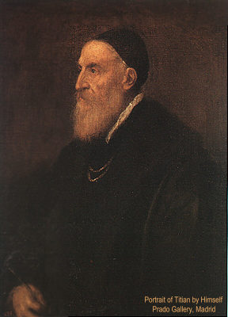

|
| A B C D E F G H I J K L M N O P Q R S T U V W X Y Z |
(TIZIANO VECELLI, called TITIAN).
The greatest of Venetian painters, born at Pieve di Cadore (Friuli); died at Venice, 27 Aug., 1577.
It has always been believed that at the time of his death he was a centenarian, and he himself wrote to Philip II in 1571 that he was more than ninety-five, which would make 1477 the year of his birth. But there are good reasons for believing that he made himself out to be older than he was and that he was born about 1487, that is ten years later than the generally accepted date. Vasari makes him seventy-seven in 1566. Titian would therefore have died when he was between 85 and 90 years old, which would render more credible the marvellous freshness of his later works (cf. Herbert Cook, in the "Nineteenth Century", Jan., 1902, and "Repertorium für Kunstwissenschaft", XXV).
The vigorous health which the artist inherited from his mountain race together with a habit of order, balance, and labour determined the predominant characteristic of his art. No painter better expressed, if not the highest beauty, at least that kind of beauty which springs from the deep joy of life, adorning it with an impression of calm, harmony, and serenity. The first Venetian School had already proved itself capable of expressing these sentiments. Titian was to give them a still freer and fuller expression with an external charm and a magic of colouring which has sometimes raised the question whether he is not the greatest and most complete of all painters.
At the age of ten Titian was brought to Venice and placed by his brother with the celebrated mosaicist, Sebastian Zuccato, but at the end of four or five years he entered the studio of the aged painter Giovanni Bellini, at that time the most noted artist in the city. There he found a group of young men about his own age, among them Giovanni Palma da Serinalta, Lorenzo Lotto, and Sebastiano Luciani, who were all to become renowned. The foremost of these innovators and their master was Giorgio da Castelfranco, nicknamed Giorgione. With him Titian formed a friendship of which all his early works bore traces, so much so that at this period it is difficult to distinguish the young master of Cadore from him of Castelfranco. The earliest know work of Titian, the little "Ecce Homo" of the Scuola di San Rocco, was long regarded as the work of Giorgione. And the same confusion or uncertainty is connected with more than one of the "Sacred Conversations", in which several holy persons (generally three or four) appear at half length in sweet and familiar association with the Blessed Virgin. The two young masters were likewise recognized as the two leaders of their new school of Arte moderna, that is of painting made more flexible, freed from symmetry and the remnants of hieratic conventions still to be found in the works of Giovanni Bellini. Together they executed in 1508 the frescoes of the Fondaco dei Tedeschi, which have unfortunately disappeared and which were to Venice what the cartoons of Leonardo and Michelangelo at the Signiory were to the Florentine School. That of Giorgione and Titian is known to us in part through the engraving of Fontana. An idea of Titian's talent in fresco may be gained from those he painted, in 1511, at Padua in the Carmelite church and in the Scuola del Santo, some of which have been preserved, among them the "Meeting at the Golden Gate", and three scenes from the life of St. Anthony of Padua, the "Murder of a Young Woman by Her Husband", "A Child Testifying to Its Mother's Innocence", and "The Saint Healing the Young Man with a Broken Limb." The arrangement and feeling are not the chief merits of these last-named works, but the beauty of the types, the grace of the female figures, the charm of the landscapes, and particularly the enchantment of the colouring must forever rank these frescoes with the most valuable works of Titian's youth.
Among the religious paintings of this period may be mentioned that of Antwerp, "The Doge Pesaro presented to St. Peter by Alexander VI" (1508), and the beautiful "St. Mark surrounded by Sts. Cosmas and Damian, Sebastian and Rocco" (Venice, S. Maria della Salute, c. 1511). Already the young master was in possession of his type of Virgins with powerful shoulders and somewhat rounded countenances, and in particular he had elaborated an extremely refined type of Christ, the most beautiful example of which is the wonderful Christ of "The Tribute Money", at Dresden, a face whose delicacy, spirituality, and moral charm have never been surpassed by any other School. From the same period seems to date the "Triumph of Faith", a subject borrowed from Savonarola's famous treatise, "The Triumph of the Cross", and treated with a magnificent fire in the spirit of Mantegna's cartoons and Dürer's prints of the "Triumph of Maximilian" (cf. Male, "L'art réligieux en France à la fin du moyen âge", 1908, 296 sqq.). These prints were executed by Andreani. But what may be called the most enduring works of Titian's youth are the profane and indeterminately allegorical ones, whose unmatched poetry of form and colouring breathe so deep a joy of living that it borders on melancholy. Such for example is the charming picture of the "Three Ages", in the Ellesmere Gallery; such especially is the masterpiece in the Cassino Borghese, "Profane and Sacred Love", whose meaning has never been successfully penetrated (cf. Olga von Gerstfeldt, "Venus und Violante" in "Monatsheft für Kunstwissenschaft", Oct., 1910), but which none the less remains by the contrast of its two figures, the splendour of the motif, the depth of the landscape, the rhythm and mystery of the composition one of the imperishable elegies of all paintings and which even Giorgione does not equal in his "Concert".
Giorgione died in 1511 and the aged Bellini in 1515, leaving Titian after the production of such masterpieces without a rival in the Venetian School. For sixty years he was to be the absolute and undisputed head, the official master, and as it were the painter laureate of the Republic Serenissime. As early as 1516 he succeeded his old master Bellini as the pensioner of the Senate. Fifteen years later began the relations with Charles V, Francis I, Alfonso and Isabella d'Este, the Houses of Ferrara and Urbino, which made him the first of the princely painters or the Renaissance and the one whose position was most international and most glorious of all. However he rarely left Venice. Married to a tenderly loved wife, solidly established in his habits of work, and like all Venetians strongly attached to the life of Venice, he regarded nothing as being worth a separation from his home, his studio, or his country. Except for a visit to Rome in 1545, and two or three visits to Augsburg between 1548 and 1551 to meet the emperor, he never left Venice save to return to Cadore. Even the liveliest curiosity regarding his art, the ardent desire to learn, which to the end of his life impelled him to acquire all that he could concerning art, as he had already devoured all the substance of Bellini and Giorgione, could not induce him to leave his work and his easel. Venice was in this respect a most favourable centre, a meeting-place for artists from all parts of the world, from North and South, Germany and Florence. Leonardo da Vinci passed through the city in 1500, Dürer stayed there in 1506, Fra Bartolommeo in 1508, Michelangelo in 1529; and the commerce of the active city, especially in books and prints, the permanent society of artists and men of letters, could not leave Titian ignorant of what was being done in the world. No invention of art was unfamiliar to him, and all his life he displayed the same eagerness to enrich his style with new elements, the same consuming anxiety for perfection.
During this period (1516-30) which may be called the period of his bloom and maturity, the artist freed himself from the traditions of his youth, undertook a class of more complex subjects and for the first time attempted the monumental style. His most noteworthy work in this style, the "Assumption" of the Church of the Frari (1518), now in the Academy of Venice, is not, despite its celebrity, a very decided work. In more than one sense it is one of his coldest productions. The solution of the problem attempted — that of uniting in the same composition two or three scenes superimposed on different levels, earth and heaven, the temporal and the infinite — was continued in a series of works such as the retable of San Domenico at Ancona (1520), the retable of Brescia (1522), and the retable of San Niccolo (1523, at the Vatican), each time attaining to a higher and more perfect conception, finally reaching an unsurpassable formula in the Pesaro retable, (1526), in the Church of the Frari at Venice. This perhaps is his most perfect and most studied work, whose patiently developed plan is set forth with supreme display of order and freedom, of originality and style. Here Titian gave a new conception of the traditional groups of donors and holy persons moving in aerial space, the plans and different degrees set in an architectural framework. To this period belongs a still more extraordinary work, "The Death of St. Peter of Verona" (1530), formerly in the Dominican Church of S. Zanipolo, and destroyed by an Austrian shell in 1867. There now exist only copies of this sublime picture (there is an excellent one at Paris in the Ecole des Beaux Arts). The association of the landscape with a scene of murder — a rapidly brutal scene of slaying, a cry rising above the old oak-trees, a Dominican escaping the ambush, and over all the shudder and stir of the dark branches — this is all, but never perhaps has tragedy more swift, startling, and pathetic been depicted even by Tintoretto or Delacroix.
The artist continued simultaneously his series of small Madonnas which he treated more and more amid beautiful landscapes in the manner of genre pictures or poetic pastorals, the "Virgin with the Rabbit" in the Louvre being the finished type of these pictures. Another marvellous work of the same period, also in the Louvre, is the "Entombment", surpassing all that has been done on the same subject. This was likewise the period of the exquisite mythological scenes, such as the famous "Bacchanals" of Madrid, and the "Bacchus and Ariadne" of London, perhaps the most brilliant productions of the neo-pagan culture or "Alexandrianism" of the Renaissance, many times imitated but never surpassed even by Rubens himself. Finally this was the period of perfect mastery when the artist composed the half-length figures and busts of young women, such as "Flora" of the Uffizi, or "The Young Woman at Her Toilet" in the Louvre (also called, without reason, "Laura de Dianti" or "The Mistress of Titian"), and which will always remain the ideal image of harmonious beauty and the grace of life at one of the periods which best knew the happiness of existence.
During the subsequent period (1530-50), as was foreshadowed by his "Martyrdom of St. Peter", Titian devoted himself more and more to the dramatic style. From this time date his historical scenes, of which unhappily it is difficult to judge, the most characteristic having been much injured or destroyed; thus, the "Battle of Cadore", the artist's greatest effort to master mo Lvement and to express even tumult, his most violent attempt to go out of himself and achieve the heroic, wherein he rivals the "War of Pisa", "The Battle of Anghiari", and the "Battle of Constantine", perished in 1577, the year of Titian's death, in the fire which destroyed all the old pictures adorning the Doge's Palace. There is extant only a poor, incomplete copy at the Uffizi, and a mediocre engraving by Fontana. In like manner the "Speech of the Marquis del Vasto" (Madrid, 1541) was partly destroyed by fire. But this portion of the master's work is adequately represented by the "Presentation of the Blessed Virgin" (Venice, 1539), one of his most popular canvasses, and by the great Ecce Homo (Vienna, 1541), one of the most pathetic and life-like of masterpieces. The School of Bologna and Rubens (Miracles of St. Benedict, St. Francis, etc.) many times borrowed the distinguished and magisterial mise-en-scène, the grand and stirring effect, and these horses, soldiers, lictors, these powerful stirrings of crowds at the foot of a stairway, while over all are the light of torches and the flapping of banners against the sky, have been often repeated. Less successful were the pendentives of the cupola at Sta. Maria della Salute ("Death of Abel", "Sacrifice of Abraham", "David and Goliath"). These violent scenes viewed in perspective from below — like the famous pendentives of the Sistine Chapel — were by their very nature in unfavourable situations. They were nevertheless much admired and imitated, Rubens among others applying this system to his forty ceilings (the sketches only remain) of the Jesuit church at Antwerp.
At this time also, the time of his visit to Rome, the artist began his series of reclining Venuses (the "Venus" of the Uffizi, "Venus and Love" at the same museum, "Venus and the Organ-Player", Madrid), in which must be recognized the effect or the direct reflection of the impression produced on the master by contact with ancient sculpture. Giorgione had already dealt with the subject in the splendid Dresden picture, but here a purple drapery substituted for its background of verdure was sufficient to change by its harmonious colouring the whole meaning of the scene. Furthermore Titian had from the beginning of his career shown himself to be an incomparable portrait-painter. Portraits like that of Alfonso d'Este (Madrid), of the "Unknown Young Man" (Munich), and the "Man with a Glove" (Louvre) would suffice to place their author in the foremost rank of painters. But a canvas like the "La Bella" (Eleanora de Gonzaga, Duchess of Urbino, at the Pitti Palace) presents something rarer still. The harmony, blue, lilac, white, and gold, is from the standpoint of colour in perfect accord with the lovely and smiling character of the countenance. In charm and magic the execution surpasses even the "Flora" of the Uffizi. "It is such portraits", says Burckhart, and others of the same order, such as the "Caterina Cornaro" of the Uffizi, which sometimes mislead modern painting especially the French School. "Why," he continues, "are these eternal forms, while the moderns rarely rise above beautiful sketches or studies? It is because the motif and the moment, the light, the colour, and the form, all were born and grew at the same time in Titian's soul, and whatever is created in such wise is eternal. The voluptuous pose, the harmony of flesh-tints with the gold of the hair, the delicate tone of the linen, countless other beauties of detail merged in the harmony of the whole, nothing obtrudes itself independently." It is impossible to enumerate, even briefly, Titian's splendid gallery of portraits; princes, or doges, cardinals or monks, artists or writers, no other painter was so successful in extracting from each physiognomy so many traits at once characteristic and beautiful. Holbein was also individual, but how much less the artist; Van Dyck is perhaps more graceful but how much more monotonous and affected. Among portrait-painters Titian is comparable only to the greatest, a Rembrandt or a Velásquez, with the interior life of the former, and the clearness, certainty, and obviousness of the latter. The last-named qualities are sufficiently manifested in the Paul III of Naples, or the sketch of the same pope and his two nephews, the "Aretino" of the Pitti Palace, the "Eleanora of Portugal" (Madrid), and the series of Charles Fifths of the same museum, the "Charles V with a Greyhound" (1533), and especially the "Charles V at Mühlenberg" (1548), an equestrian picture which as a symphony of purples is perhaps the ne plus ultra of the art of painting.
During the last twenty-five years of his life (1550-76) the artist, more and more absorbed in his work as a portrait-painter and also more self-critical, unable to be satisfied and insatiable of perfection, finished only a few great works. Some of his pictures he kept for ten years in his studio, never wearying of returning to them and retouching them, constantly adding new expressions at once more refined, concise, and subtle. His palette lost the incomparable freshness which characterized the great work of his maturity; the tone became softened, the matter itself grew heavier and more dense, there is less variation, resplendency, and brilliance, but in the gamut selected there were never more powerful notes nor bolder execution. The artist subjects to his ideas and methods the simplification which summed up the experiences of a long life. For each of the problems which he successively undertook he furnished a new and more perfect formula. He never again equalled the emotion and tragedy of the Crowning with Thorns (Louvre), in the expression of the mysterious and the divine he never equalled the poetry of the "Pilgrims of Emmaus", while in superb and heroic brilliancy he never again executed anything more grand than "The Doge Grimani adoring Faith" (Venice, Doge's Palace), or the "Trinity", of Madrid. On the other hand from the standpoint of flesh tints, his most moving pictures are those of his old age, the "Dan" of Naples and of Madrid, the "Antiope" of the Louvre, the "Rape of Europa" (Boston, Gardner collection), etc. He even attempted problems of chiaroscuro in fantastic night effects ("Martyrdom of St. Laurence", Church of the Jesuits, Venice; "St. Jerome", Louvre). In the domain of the real he always remained equally strong, sure, and master of himself; his portraits of Philip II (Madrid), those of his daughter, Lavinia, and those of himself are numbered among his masterpieces.
So until the end, until that tragic "Pietà" of the Academy of Venice, which was found incompleted in his studio, the aged master strove indefatigably in pursuit of an ever-changing ideal, or rather one which changed when he believed he had given it full expression. Each time a new impression, the discovery of an artist hitherto unknown to him, revealed to him a new aspect of beauty, the great old man unweariedly recommenced his work and endeavoured to incorporate in it the new elements which he had just perceived. This it is which gives to his work as a whole its great significance and to his very countenance, beneath the health and balance of an iron constitution, an air of sadness and distress the like of which is only found in Rembrandt's last portraits. In fact no one ever expended such obstinate effort in the attempt to realize perfection. It is this which gives to certain parts of his work a tense character, an aspect of deliberateness, which occasionally causes an appearance of coldness. But in the end he is always regarded as the exemplar and the greatest of painters. "Titian is one of those who come closest to the spirit of antiquity", writes Delacroix in his "Journal", and in a note for his "Dictionnaire des beaux arts", defining the antique he cites the work of Titian, and indeed there is no other modern work which shares so fully with the marbles of the Pathenon the privilege of eternally enchanting and moving us.
VASARI, Lives of Celebrated Painters, etc., tr. FOSTER, ed. Blashfield and Hopkins (New York, 1896); RIDOLFI, Meraviglie dell arte, I (Venice 1648), 135 sqq.; MAËR, Dell' imitazione pittorica e dell' eccellenza delle opere de Tiziano (Venice, 1878); NORTHCOTE, The Life of Titian, (London, 1830); CROWE AND CAVALCASELLE, Titian (London, 1877); LAFENESTRE, Titien (in fol., Paris, 1885); BURCKHARDT, Cicerone, II (Paris, 1892), 730 sqq.; DELACROIX, Journal (Paris, 1893); KNACKFUSS, Tiziano (Bielefeld, 1900); GRONAU, Tizian (tr. London, 1904); Tizian des Meister Gem lde in 230 Abbildungen (Stuttgart, 1904); WYZEWA, Ma tres italiens d'autrefois (Paris, 1907). MORELLI, Italian Painters (London, 1892); PHILLIPS, The Earlier and Later Works of Titian in Portfolio (1897-8).
APA citation. (1912). Titian. In The Catholic Encyclopedia. New York: Robert Appleton Company. Retrieved April 26, 2010 from New Advent: http://www.newadvent.org/cathen/14742a.htm
MLA citation. "Titian." The Catholic Encyclopedia. Vol. 14. New York: Robert Appleton Company, 1912. 26 Apr. 2010 <http://www.newadvent.org/cathen/14742a.htm>.
Transcription. This article was transcribed for New Advent by Gerald Rossi.
Ecclesiastical approbation. Nihil Obstat. July 1, 1912. Remy Lafort, S.T.D., Censor. Imprimatur. +John Cardinal Farley, Archbishop of New York.
Contact information. The editor of New Advent is Kevin Knight. My email address is webmaster at newadvent.org. (To help fight spam, this address might change occasionally.) Regrettably, I can't reply to every letter, but I greatly appreciate your feedback — especially notifications about typographical errors and inappropriate ads.